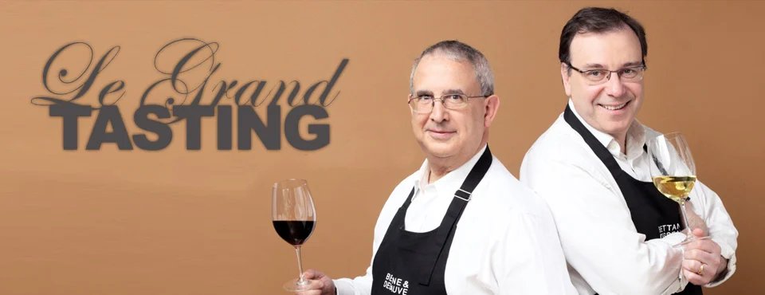

Ficha do filme
Uma edição em 14 filmes
A página original do RENDEZVOUS reunia a programação em vídeo. O festival abre com uma apresentação e um guia, antes de passar por Champagne, Bordeaux e Borgonha em conversas com quem faz os vinhos.
Filmes / Borgonha · 6:41
A Bouchard Père & Fils nasceu em 1731 como comércio de tecidos; o vinho veio com o filho do fundador, a partir de 1746.

Ficha do filme
A página original do RENDEZVOUS reunia a programação em vídeo. O festival abre com uma apresentação e um guia, antes de passar por Champagne, Bordeaux e Borgonha em conversas com quem faz os vinhos.